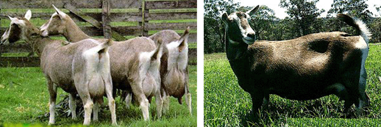

ពូជពពែអាចត្រូវបានចាត់ថ្នាក់យ៉ាងទូលំទូលាយតាមគោលបំណងរបស់វាទៅជាពូជទឹកដោះគោ ពូជសរសៃ និងពូជសាច់។ ពូជទឹកដោះគោរួមមាន Saanen, British Saanen, Japanese Saanen, Toggenburg, Alpine, Nubian និងពពែទឹកដោះគោ Nonsan ។ ពូជសរសៃរួមមានពពែ Angora និង Cashmere ។ ពូជសាច់រួមមានពូជដើមរបស់ជប៉ុន និងពពែដើមចិន រួមជាមួយនឹងពពែក្នុងស្រុកផ្សេងៗដែលចិញ្ចឹមក្នុងស្រុក។
ពូជ Saanen គឺជាពូជពពែទឹកដោះគោតំណាង និងចែកចាយយ៉ាងទូលំទូលាយបំផុតនៅក្នុងពិភពលោក។ មានប្រភពចេញពីជ្រលង Saanen ក្នុង Canton នៃ Bern ប្រទេសស្វីស វាបានរីករាលដាលពាសពេញពិភពលោកតាំងពីទសវត្សរ៍ឆ្នាំ 1930 តាមរយៈសហរដ្ឋអាមេរិក និងអឺរ៉ុប។
ពួកវាមានសក់រលោង ខ្លី ពណ៌ស ឬក្រែម-ស ដែលប្រកាន់ខ្ជាប់យ៉ាងជិតស្និទ្ធទៅនឹងរាងកាយ។ ទាំងឈ្មោល និងញីមានពុកចង្ការ ដោយបុរសមានពុកមាត់វែង និងពេញជាង។ ពួកវាមានដងខ្លួនធំ ក្បាលទំហំមធ្យម មានថ្ងាសទូលាយ ភ្នែកពណ៌លឿង ចិញ្ចើមពណ៌ស ត្រចៀកត្រង់ និងចបលឿង។
មនុស្សស្រីមានទ្រូងធំទូលាយ និងខ្នងផ្តេកជាមួយនឹងចង្កេះធំទូលាយ។ ពងអូវុលរបស់ពួកគេត្រូវបានពន្លូត និងភ្ជាប់ទៅនឹងពោះ ដោយមានដើមទ្រូងបត់ទៅខាងក្រៅ - នេះត្រូវបានគេចាត់ទុកថាគួរឱ្យចង់បាន។ សរុបមក រាងកាយរបស់ពួកវាជារាងត្រីកោណវែង ជាលក្ខណៈរបស់សត្វទឹកដោះគោ។
Saanen ដ៏ល្អមួយអាចផលិតទឹកដោះគោប្រហែល 2,000 គីឡូក្រាមក្នុងអំឡុងពេលបំបៅដោះកូន (270-350 ថ្ងៃ) ជាមួយនឹងជាមធ្យមជាមធ្យមចាប់ពី 500 ទៅ 1,000 គីឡូក្រាម។ ទិន្នផលទឹកដោះគោប្រចាំថ្ងៃខ្ពស់បំផុតអាចឡើងដល់ 3-5 គីឡូក្រាមហើយទិន្នផលប្រចាំថ្ងៃជាមធ្យមគឺប្រហែល 2 គីឡូក្រាម។
ទំងន់គឺប្រហែល 50-65 គីឡូក្រាមសម្រាប់ស្ត្រីនិង 70-90 គីឡូក្រាមសម្រាប់បុរស។ កម្ពស់គឺប្រហែល 75 សង់ទីម៉ែត្រសម្រាប់ស្ត្រីនិង 85 សង់ទីម៉ែត្រសម្រាប់បុរស។ ពូជ Saanen បានបម្រើជាមូលដ្ឋានគ្រឹះហ្សែនសម្រាប់ពូជទឹកដោះគោផ្សេងទៀតដូចជា ពូជ Saanen របស់អង់គ្លេស អាឡឺម៉ង់ Saanen និងជប៉ុន Saanen ។
ពូជ Saanen របស់អង់គ្លេសគឺជាពូជដែលប្រសើរឡើងដែលត្រូវបានបង្កើតឡើងដោយការបង្កាត់ពូជពពែដើមរបស់អង់គ្លេសជាមួយនឹងពូជ Saanen ។ អាវធំរបស់វាមានពណ៌ស ខ្លី និងរលោង។ បើប្រៀបធៀបទៅនឹង Saanen សុទ្ធ វាមានជើងវែងជាង ស៊ុមធំជាង និងផលិតទឹកដោះបានល្អប្រសើរ។
វាត្រូវបានទទួលស្គាល់ជាផ្លូវការថាជាពូជនៅឆ្នាំ 1925 ដោយសមាគមពពែអង់គ្លេស។ ពូជនេះត្រូវបានគេស្គាល់ថាមានចរិតឆេវឆាវ និងសមត្ថភាពលូតលាស់ក្នុងដីរដុប។ ខណៈពេលដែលរូបរាងស្រដៀងទៅនឹង Saanen ទិន្នផលទឹកដោះគោសរុបរបស់វាគឺប្រហែល 2,600 គីឡូក្រាម ជាមួយនឹងការផលិតជាមធ្យមប្រចាំថ្ងៃ 6-8 គីឡូក្រាម និងមាតិកា butterfat ប្រហែល 3.48% ។ វាត្រូវបានគេនាំចេញទៅប្រទេសនានានៅអឺរ៉ុប និងបានរួមចំណែកក្នុងការកែលម្អការបង្កាត់ពូជពពែ។
Saanen របស់ជប៉ុនត្រូវបានបង្កើតឡើងដោយការបង្កាត់ពូជពពែដើមកំណើតម្តងហើយម្តងទៀតពីតំបន់ Kyushu នៃប្រទេសជប៉ុនជាមួយនឹងពពែ Saanen ឈ្មោលឬញី។ វាត្រូវបានគេដាក់ឈ្មោះជាផ្លូវការថា "Japanese Saanen" នៅពេលបង្កើតសមាគមពពែជប៉ុនក្នុងឆ្នាំ 1949 ។
នៅក្នុងរូបរាងវាប្រហាក់ប្រហែលនឹង Saanen ។ កម្ពស់ជាមធ្យមគឺប្រហែល 75 សង់ទីម៉ែត្រសម្រាប់ស្ត្រីនិង 85 សង់ទីម៉ែត្រសម្រាប់បុរស។ ទម្ងន់ជាមធ្យមគឺប្រហែល 52 គីឡូក្រាមសម្រាប់ស្ត្រីនិង 64 គីឡូក្រាមសម្រាប់បុរស។ ទិន្នផលទឹកដោះគោសរុបគឺប្រហែល 300-500 គីឡូក្រាមជាមួយនឹងរយៈពេលបំបៅកូន 150-250 ថ្ងៃ។
ពូជ Toggenburg មានប្រភពមកពីជ្រលង Toggenburg ភាគឦសានប្រទេសស្វីស។ អាវធំរបស់វាមានពណ៌ក្រម៉ៅ ឬពណ៌សូកូឡា ជាមួយនឹងសក់ខ្លីទៅប្រវែងមធ្យម ដែលសំប៉ែតទល់នឹងដងខ្លួន។ ត្រចៀកមានស្នាមពណ៌សនៅជុំវិញ ឬនៅចុង ហើយឆ្នូតពណ៌សពីរផ្សេងគ្នារត់ពីខាងលើភ្នែកទៅត្រចៀក។
ពូជនេះមានក្បាលធំទូលាយ ភ្នែកធំ និងត្រចៀកត្រង់។ ផ្នែកខាងក្នុងនៃជើង ក៏ដូចជាផ្នែកខាងក្រោមនៃកំភួនដៃ និងបាតដៃសុទ្ធតែមានពណ៌ស។ បំណះរាងត្រីកោណពណ៌សក៏មានវត្តមាននៅផ្នែកម្ខាងនៃកន្ទុយផងដែរ។
បើនិយាយពីទំហំវិញ ស្ត្រីមានទម្ងន់ប្រហែល 45-50 គីឡូក្រាម ហើយបុរសមានទម្ងន់ពី 60 ទៅ 80 គីឡូក្រាម។ កម្ពស់គឺតូចជាងពូជអាល់ផែនបន្តិច ដោយញីមានកម្ពស់ប្រហែល 70 សង់ទីម៉ែត្រ និងឈ្មោលប្រហែល 90 សង់ទីម៉ែត្រ។
ពពែ Toggenburg មានពងមាន់ និងក្បាលសុដន់ដែលលូតលាស់បានល្អ ទោះបីជាការផលិតទឹកដោះរបស់ពួកគេទាបជាងពូជ Saanen បន្តិចក៏ដោយ។ រយៈពេលនៃការបំបៅកូនមានរយៈពេលពី 240-280 ថ្ងៃជាមួយនឹងទិន្នផលទឹកដោះគោសរុបប្រហែល 600-700 គីឡូក្រាមនិងមាតិកា butterfat 3.7% ។

ពូជ Alpine របស់បារាំងគឺជាពូជដែលត្រូវបានកែលម្អដែលកើតចេញពីពពែដើមដែលត្រូវបានចិញ្ចឹមយ៉ាងទូលំទូលាយនៅក្នុងតំបន់ភ្នំនៃភ្នំអាល់បារាំង និងប្រទេសស្វីស។ ពូជនេះមិនមានពណ៌ថ្នាំកូតថេរទេ ហើយអាចលេចឡើងជាពណ៌ស ត្នោត ខ្មៅ ក្រហម ឬការរួមបញ្ចូលគ្នានៃពណ៌ទាំងនេះ។
ពួកវាត្រូវបានគេស្គាល់ថាសម្រាប់និស្ស័យមិនចេះនិយាយ សុខភាពរឹងមាំ និងស័ក្តិសមសម្រាប់ការបង្កាត់ពូជនៅតំបន់ភ្នំ។
ស្ត្រីមានទម្ងន់ប្រហែល 60 គីឡូក្រាមបុរសប្រហែល 75 គីឡូក្រាម។ កម្ពស់គឺប្រហែល 75 សង់ទីម៉ែត្រសម្រាប់ស្ត្រីនិង 85-100 សង់ទីម៉ែត្រសម្រាប់បុរស។
រយៈពេលនៃការបំបៅកូនមានរយៈពេលប្រហែល 280-300 ថ្ងៃ។ ទិន្នផលទឹកដោះគោជាមធ្យមប្រចាំថ្ងៃគឺ 2.37 គីឡូក្រាម ជាមួយនឹងទិន្នផលទឹកដោះគោសរុបប្រហែល 1,600 គីឡូក្រាម។
បន្ថែមពីលើនេះ ពូជអង់គ្លេស Alpine ដែលត្រូវបានបង្កើតឡើងដោយការបង្កាត់ពូជ Alpine បារាំងជាមួយ Toggenburg ត្រូវបានគេដឹងថាមានសមត្ថភាពផលិតទឹកដោះគោបានល្អជាង Saanen ។

ពូជ Nubian មានប្រភពមកពីតំបន់ Nubia នៅភាគឦសាននៃទ្វីបអាហ្រ្វិក ហើយត្រូវបានចិញ្ចឹមជាទូទៅនៅក្នុងប្រទេសដូចជា Nubia អេហ្ស៊ីប និងអេត្យូពី។ វាក៏ត្រូវបានបង្កាត់ពូជនៅអឺរ៉ុប ឥណ្ឌា និងសហរដ្ឋអាមេរិកផងដែរ។ ត្រូវបានគេស្គាល់ផងដែរថាជា "ពពែអេហ្ស៊ីប" ពណ៌អាវធំរបស់វាមានភាពប្រែប្រួលខ្ពស់ ហើយអាចមានពណ៌ក្រហមត្នោត ដើមទ្រូង ពណ៌ស ខ្មៅ ឬពណ៌ចម្រុះ។
ពូជនេះមានក្បាលខ្លី ធំទូលាយ និងត្រចៀកធំ។ ទាំងឈ្មោល និងញីមានកម្ពស់ប្រហាក់ប្រហែលគ្នាប្រហែល ៦០-៧០ ស.ម. Nubians មានចរិតស្លូតបូត ប៉ុន្តែមិនសមល្អសម្រាប់ការបង្កាត់ពូជក្នុងអាកាសធាតុត្រជាក់ និងសើម។
ទិន្នផលទឹកដោះគោជាមធ្យមប្រចាំថ្ងៃគឺប្រហែល 3-4 គីឡូក្រាមហើយទឹកដោះគោមានមាតិកាខ្លាញ់ប៊ឺរខ្ពស់ចាប់ពី 4% ទៅ 7% ។

ពពែទឹកដោះគោឡាវសានរបស់ចិន គឺជាពូជទឹកដោះគោតំណាងដែលចិញ្ចឹមនៅតំបន់ភាគខាងកើត និងភាគខាងត្បូងនៃខេត្ត Shandong ក៏ដូចជាឧបទ្វីប Jiaodong ក្នុងប្រទេសចិនផងដែរ។
វាមានសក់ស្អាត ខ្លី ស។ ទាំងបុរសនិងស្ត្រីមានស្នែង។ នៅអាយុ 12 ខែ ជាធម្មតាពួកគេឡើងដល់ជាង 80% នៃទម្ងន់ខ្លួនពេញវ័យរបស់ពួកគេ។ បុរសពេញវ័យមានទម្ងន់លើសពី 80 គីឡូក្រាមខណៈពេលដែលស្ត្រីមានទម្ងន់ប្រហែល 50 គីឡូក្រាម។
រយៈពេលនៃការបំបៅដោះកូនចាប់ផ្តើមនៅអាយុប្រហែល 13 ទៅ 14 ខែហើយទិន្នផលទឹកដោះគោប្រចាំឆ្នាំលើសពី 700 គីឡូក្រាម។ អត្រាបន្តពូជគឺប្រហែល 170-190% ក្នុងមួយឆ្នាំ ដោយស្ត្រីភាគច្រើនផ្តល់កំណើតបានកូនប្រហែល 2 នាក់ក្នុងមួយឆ្នាំ។

ពូជពពែទឹកដោះគោគួរឱ្យកត់សម្គាល់ផ្សេងទៀតរួមមាន៖
Granada : មានដើមកំណើតមកពីភាគខាងត្បូងប្រទេសអេស្ប៉ាញ ពូជនេះត្រូវបានគេស្គាល់ដោយសារសមត្ថភាពទឹកដោះគោរបស់វា។
Appenzell : មានរូបរាងស្រដៀងទៅនឹងពូជ Toggenburg ប៉ុន្តែត្រូវបានសម្គាល់ដោយអាវពណ៌សរបស់វា។
ម៉ាល់តា ៖ ពូជតូចមួយមានទម្ងន់ប្រហែល 28-33 គីឡូក្រាម មានដើមកំណើតពីកោះម៉ាល់តាក្នុងសមុទ្រមេឌីទែរ៉ាណេ។ ត្រូវបានគេស្គាល់ថាសម្រាប់ការសម្របខ្លួន និងផលិតទឹកដោះគោ ទោះបីជាវាមានទំហំតូចជាងក៏ដោយ។